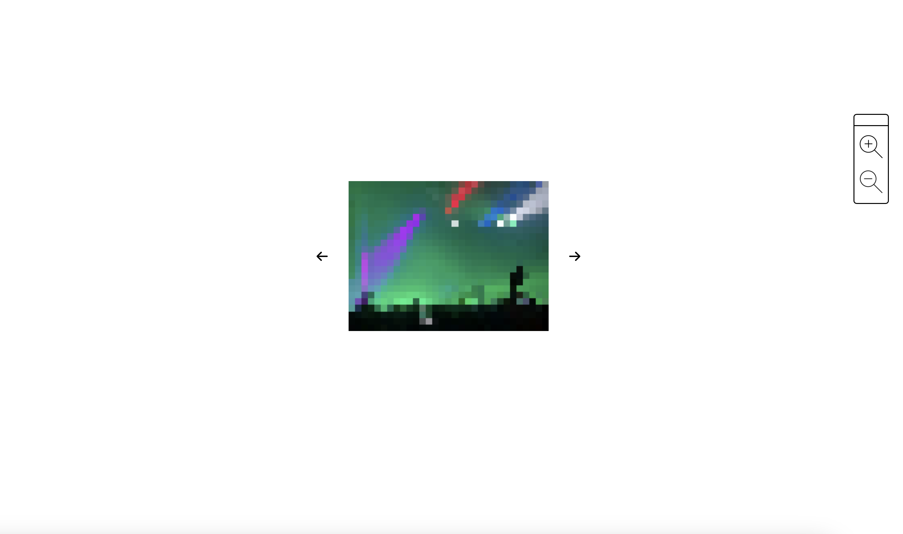
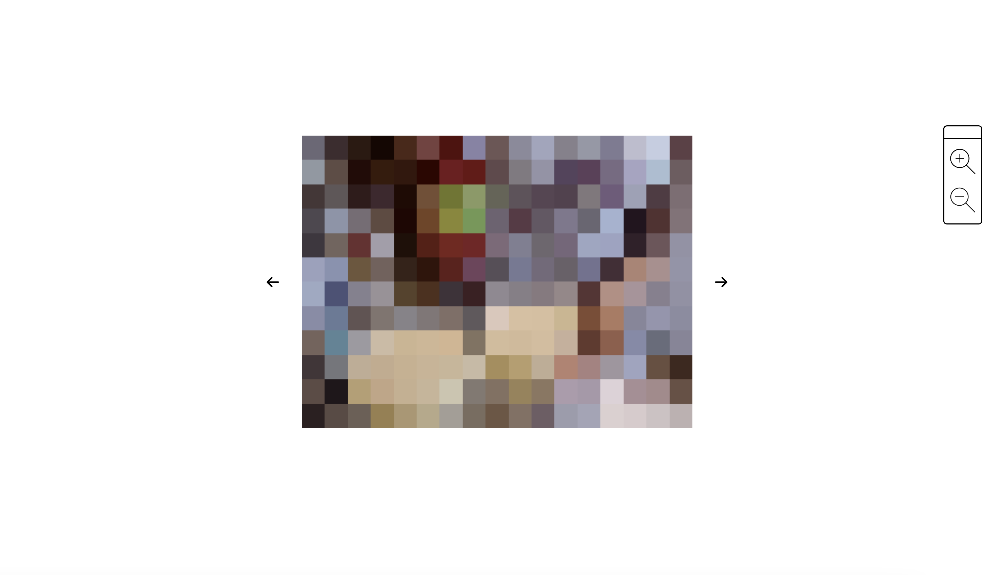

AGAINST ACCESS
TRY ITJavaScript · HTML · CSS
An interactive, web-based video gallery built from personal camera roll footage, examining the tension between intimacy and exposure in digital spaces. Through interactivity and a gradual shift towards abstraction, it turns increased engagement into increased illegibility of the original footage.
Key Features
- Interactive navigation-driven interface
- Real-time pixelation, distortion and displacement
- Progressive image degradation tied to interaction frequency

